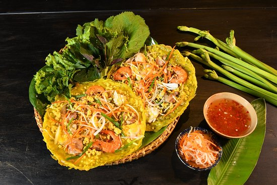
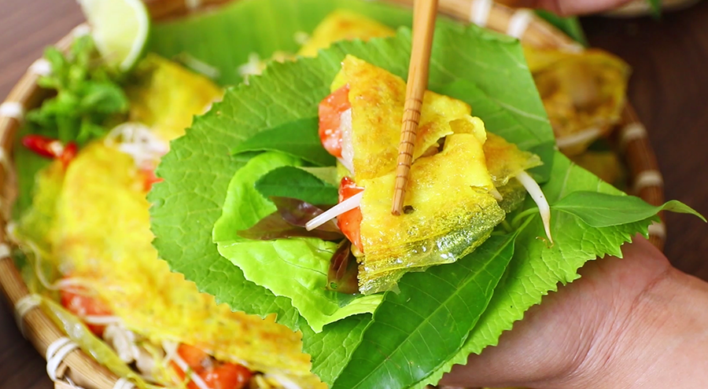
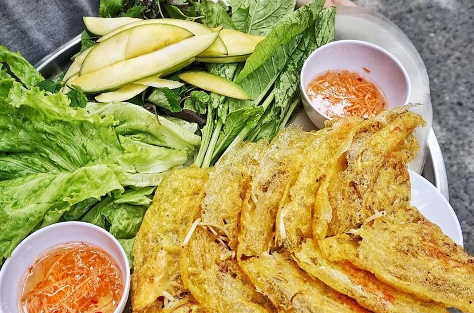
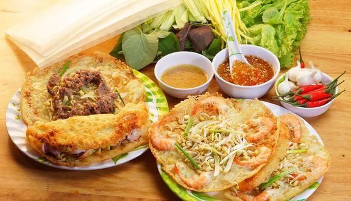
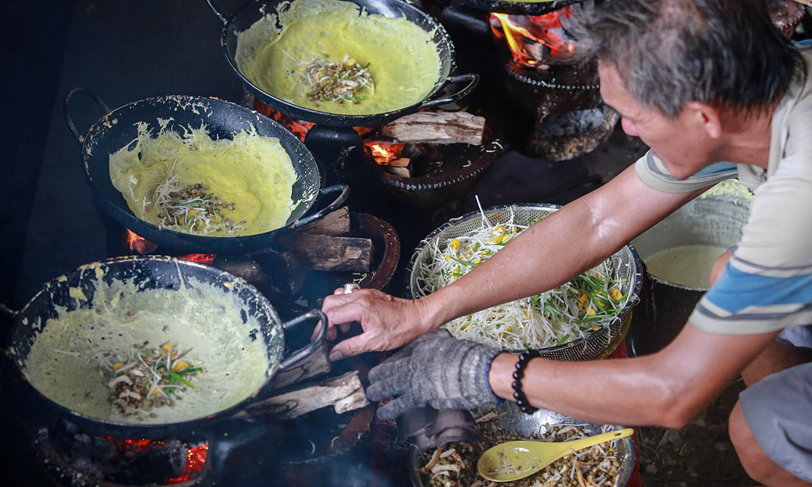

A unique “banh xeo” in Vietnam
Beyond pho, goi cuon & banh mi, banh xeo is often named as a must-try dish for visitors to Vietnam.
06 Mar
What is Banh Xeo?
“Banh xeo” is Vietnamese style crepe with whole shrimp, thinly sliced pork and bean sprouts.
There are few Vietnamese dishes that can evoke as many of our senses as bánh xèo (sizzling cake or sizzling crepe), a bright yellow crepe stuffed with an explosion of protein goodness, served alongside a platter of multi-colored herbs and vegetables. Our ears tingle when the batter hits the hot pan to make a sizzling sound (hence the name “xèo”); our hands feel the contrasting temperatures and textures when tearing a piece of the hot cake and rolling it into the cool crisp lettuce leaves. Dipping the roll into the accompanying fish sauce and everything comes together nicely.
“Banh xeo” is prepared differently throughout the country. Tourists traveling about in Vietnam are sure to encounter a different recipe, and sometimes even a different name, for “banh xeo” depending on which region and province they are visiting.
These are a pale yellow spicey Vietnamese style crepe. One piece on the bottom, and another on top encase what is usually a salad consisting of been sprouts, prawns, boiled pork, taro and carrot. Drenched in fish sauce, and you have a deliciously messy slice of fine pleasure. The dish is round, and you cut it into slices, like a pizza, so it resembles a triangle on the main platter, but usually by the time it arrives on your plate, it could resemble anything really
Different Styles of “Banh Xeo”
“Banh xeo” is prepared differently throughout the country. Tourists traveling about in Vietnam are sure to encounter a different recipe, and sometimes even a different name, for “banh xeo” depending on which region and province they are visiting.
In the Southern region, the “banh xeo” is the size of a large dish and yellow in color due to the employment of turmeric powder. The Southern people always add coconut milk to the rice flour to make the crepe extra delicious. The crepe is stuffed with bean sprouts, mung beans, shrimp and pork. A sweet and sour fish sauce and fresh vegetables are used as accompaniments.
Though it’s unclear when these tasty pancakes first came into existence, most agree that the original bánh xèo hailed from central Vietnam. During the Tay Son era, the crepes were so popular that locals would switch up their usual rice diet on the second and 16th day of the lunar month, opting for bánh xèo in place of their typical meal. central Vietnam’s original pancake has begot countless variations. In Binh Dinh, Quang Ngai and Quang Nam provinces, locals wrap their medium-sized bánh xèo in rice paper, while further south in Khanh Hoa, Ninh Thuan and Binh Thuan, cooks trade pork and bean sprouts for seafood and a particularly delicious combination of fish sauce, chilis and peanut sauce. These smaller crepes are sometimes wrapped in fresh greens or not wrapped at all.
The further south you go, the bigger the bánh xèo gets. In Can Tho, Bien Hoa and Saigon, giant crepes packed with mung bean and pork, shrimp, bean sprouts and come with an accompanying plate of herbs and fresh greens.
Its popularity in the southern hub, however, is a more recent development: VnEconomy suggests the dish wasn’t all that common in Saigon during the 1960s or ‘70s, but in the 1980s, as more workers came to the city, some of them from central Vietnam, bánh xèo began to gain in popularity thanks to its portability. Back in the day, bánh xèo made an especially tasty and convenient meal for farmers, who would wrap the crepes in banana leaves and bring them along to the rice fields.
Where to Eat “Banh Xeo” in Hanoi and Ho Chi Minh City?
In Hanoithere are a lot of addresses for you to enjoy “banh xeo”, such as:
- 22 Hang Bo Street
- “Quan Ngon” restaurant at 12 Phan Boi Chau Street
- “Chin Tham” restaurant on Thai Ha Street.
In Ho Chi Minh City, southern-style “banh xeo” can be found at:
- Banh Xeo 46A on Dinh Cong Trang Street, District 1
- An la ghien Restaurant at 54A Nguyen Van Troi Street, Ward 15, Phu Nhuan District
- Those seeking a meatless version of “banh xeo” can find them at vegetarian restaurants on An Lac Restaurant, 175/15 Pham Ngu Lao Street, District 1, and Thien Nguyen Restaurant, 174 Calmete street, District 1.